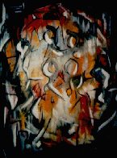

e s s a y s
j e s s i c a . a r g y l e
examines Grant Loewen's novel, Brick, Looking Up published in Montreal
by DC Books (1992).
l y d i a . e u g e n e
discusses The Collected Works of Billy the Kid by Michael Ondaatje.
Published by Anansi Press, Concord, Ontario (1970).
|